A B O U T
私について

HITOMI NAGASAKA
はじめまして。
山梨県を拠点に、Webデザインとコーディングを学んでいるナガサカ ヒトミです。
昔から紙ものやレイアウトを考えることが好きで、アパレル業界で15年勤務する中でも、冊子やDMを制作する時間に楽しさを感じていました。「どう見せたら伝わるか」を考えてきた経験を生かしたいと思い、Webデザインを学び始めました。お客様の話をじっくり聞き、信頼関係を大切にしながら、想いを形にするところから始められるWebデザイナーを目指しています。
特技は、なぜか子どもとすぐに仲良くなれること。
趣味は、愛猫とのんびり過ごすことと、美味しいご飯とお酒を楽しむこと、そして甥っ子と夢中でものづくりをすることです。
MY SKILLS | できること
Web Design
Webサイトのデザインを制作しています。
お客様の想いや目的をじっくり伺い、ユーザーが迷わず必要な情報へたどり着ける、シンプルで分かりやすいデザインを心がけています。見た目の美しさだけでなく、使いやすさにも配慮し、その魅力が伝わるサイト制作に取り組んでいます。
Figma
Figmaを使用し、Webサイトのワイヤーフレームからデザインカンプまで制作しています。情報の優先順位や余白、文字の読みやすさを意識しながら、操作に迷わない画面設計を心がけています。また、コンポーネントやオートレイアウトを活用し、修正や更新がしやすいデータ作りにも取り組んでいます。
Web Development
HTML・CSS・JavaScriptを使用し、デザインカンプをもとにWebサイトをコーディングできます。レスポンシブ対応や、読みやすく修正しやすいコードを意識して制作しています。スライダーやメニューの開閉、スクロールアニメーションなどの実装にも対応できます。
HTML / CSS
HTML・CSSを使用し、デザインカンプをもとにWebサイトを制作できます。見た目を再現するだけでなく、情報が整理された分かりやすい構造と、さまざまな画面サイズで快適に閲覧できるレスポンシブ対応を意識しています。エディターはVisual Studio Codeを使用しています。
JavaScript
JavaScriptを使用し、スライダーやメニューの開閉、スクロールに合わせたアニメーションなど、Webサイトに動きを加えることができます。見た目の楽しさだけでなく、ユーザーが直感的に操作できる、心地よい動きを意識して実装しています。
MY STRENGTHS | 強み
納得するまで向き合う探究心
デザインを考えるときは、「これだ！」と気持ちが高まるまで、さまざまな表現や可能性を探り続けます。簡単に答えを決めず、何度も考え、試しながら、お客様の想いに合った、心から納得できる形に仕上げることを大切にしています。
コツコツと積み重ねる継続力
アパレル販売を15年間続け、店長として店舗運営にも携わってきました。負けず嫌いな性格で、できないことをそのままにせず、少しずつでも成長するために努力を続けられます。自分の成長だけでなく、相手の期待や想いに応えたいという気持ちが、粘り強く取り組む原動力になっています。
相手に寄り添う距離感
相手の気持ちや考えを尊重し、近すぎず遠すぎない、心地よい距離感で向き合うことを大切にしています。接客では、お客様が話したいときはじっくり聞き、言葉の奥にある想いにも耳を傾け、迷っているときはそっと提案することを心がけてきました。一つひとつのやり取りを積み重ね、「この人なら安心して任せられる」と思っていただける存在を目指しています。


CONTACT
お問い合わせ
ポートフォリオをご覧いただきありがとうございます。
Web制作のご相談やご依頼など、下記メールにお気軽にお問い合わせください。
内容を確認後、2日以内にご返信いたします。